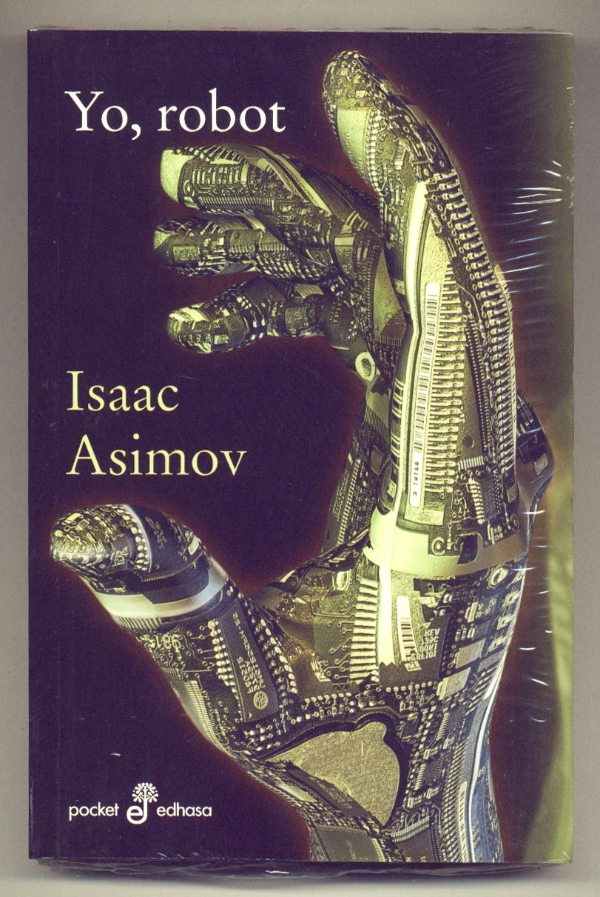

► Que es la tecnologia
La tecnología es el conjunto de conocimientos y técnicas que se aplican de manera ordenada para alcanzar un determinado objetivo o resolver un problema.
La tecnología es una respuesta al deseo del hombre de transformar el medio y mejorar su calidad de vida. Incluye conocimientos y técnicas desarrolladas a lo largo del tiempo que se utilizan de manera organizada con el fin de satisfacer alguna necesidad.
La palabra tecnología proviene de la unión de dos palabras griegas: «tekne», que es técnica, arte y, «logia», que significa destreza sobre algo.
En conclusion la tecnologia es un conjunto de conocimientos de base científica que permite describir, explicar, diseñar y aplicar soluciones técnicas a problemas prácticos de forma sistemática y racional.
La tecnología bien utilizada puede mejorar la calidad de vida de las personas (como, por ejemplo, el desarrollo de métodos de producción más limpios). No obstante, mal utilizada, puede causar grandes daños a las personas y a la sociedad (por ejemplo, la utilización de tecnología para ataques y crímenes). Fuente
► Tipos de tecnologias ◄
• Tecnología Blanda: La tecnología blanda consiste en el conjunto de métodos y procesos que conforman un material o activo intangible. En otras palabras, consisten en conocimientos o técnicas que pueden añadir valor según la utilización que se le dé. Las tecnologías blandas sirven en su mayoría para simplificar procesos o complementar a las denominadas tecnologías duras. Ejemplos de la utilización de este tipo de tecnologías en el día a día son las estrategias de organización o métodos de trabajo. Por ejemplo, pueden ser las denominadas metodologías ágiles. Por otra parte también lo compondría el conjunto del software, ya que complementa a una tecnología dura como puede ser un ordenador o PC.
• Tecnología Duras: La tecnología dura es aquella que consiste en la producción, desarrollo o fabricación de productos tangibles. Es decir, productos que se pueden almacenar de forma física. En otras palabras, se trata en su mayoría de maquinaria y productos finales que pueden posibilitar desde una producción o transformación, hasta ser esos propios productos finales producidos o transformados. Las tecnologías duras sirven, en su mayoría, para realizar una acción u objetivo final. Podemos mencionar ejemplos de utilización de este tipo de tecnologías en el día a día que no son más que conocidos, ya que ¿quién no ha utilizado alguna vez un automóvil, un PC o un smartphone? Por otra parte, si bien se suele decir que las tecnologías duras necesitan de forma incondicional las tecnologías blandas, en el siguiente epígrafe vamos a explicar porqué no es cierto, al menos de forma absoluta.
• Tecnología Flexible: La tecnología flexible es aquel tipo de tecnología que puede adaptarse a una evolución o ser parte de un producto distinto al que se desarrolló.Es decir, existen tecnologías que se desarrollaron para un único propósito pero después pudieron usarse para otros usos. Ejemplo es la cámara de fotos, la cual puede ser un dispositivo individual o estar integrado en un smartphone. Este tipo de tecnología es versátil por naturaleza y permite adaptarla como mejor considere la industria o empresa objetivo. Al ser flexible, el límite de su aplicación en otros productos o formas de uso los limita la creatividad y el ingenio. Las tecnologías flexibles sirven en definitiva para complementar productos o crear nuevos productos y servicios. Si nos fijamos en la tecnología blockchain podemos observar que si bien surgió para el desarrollo de la criptomoneda más conocida del mundo, ha sido utilizada de manera muy diversa para otras tareas y es una tecnología que se está implementando en casi todos los sectores. Hablamos de su aplicación desde el sector salud hasta en el sector jurista, como ejemplos contrapuestos.
• Tecnología Fija: La tecnología fija consiste en aquel tipo de tecnología que se concibe para una tarea o uso específico, por lo que su reutilización en otros productos finales es muy complicada. En otras palabras, son tecnologías que se dedican a una actividad en concreto y por ello sólo en contadas ocasiones pueden servir para otras tareas. Un ejemplo es un piano, ya que si bien es un instrumento, su uso se acota al sector musical.
► Libros mas importantes de tecnologia
| # | Libro | Imagen | Resumen |
|---|---|---|---|
| 1 | Alan Turing. El hombre que sabía demasiado |  |
Alan Turing está considerado el padre de la computación moderna y fue la persona que logró descifrar el código Enigma de los nazis en la Segunda Guerra Mundial. |
| 2 | Yo, robot |  | Este libro de tecnología es un clásico de la ciencia ficción y aunque su relato parecía visionario hoy ya es pura realidad. Aborda los conflictos éticos entre los robots y los humanos |
| 3 | Vida 3.0 |  |
cualquiera que quiera analizar cómo la inteligencia artificial está impactando en el trabajo, la sociedad, la justicia y otras dimensiones de la vida actual, debería leer este libro. |
| 4 | The pragmatic programmer | Todo un clásico que volvemos a recomendar por cómo ayuda a los programadores a ser más eficientes en su trabajo y mejorar sus habilidades. |